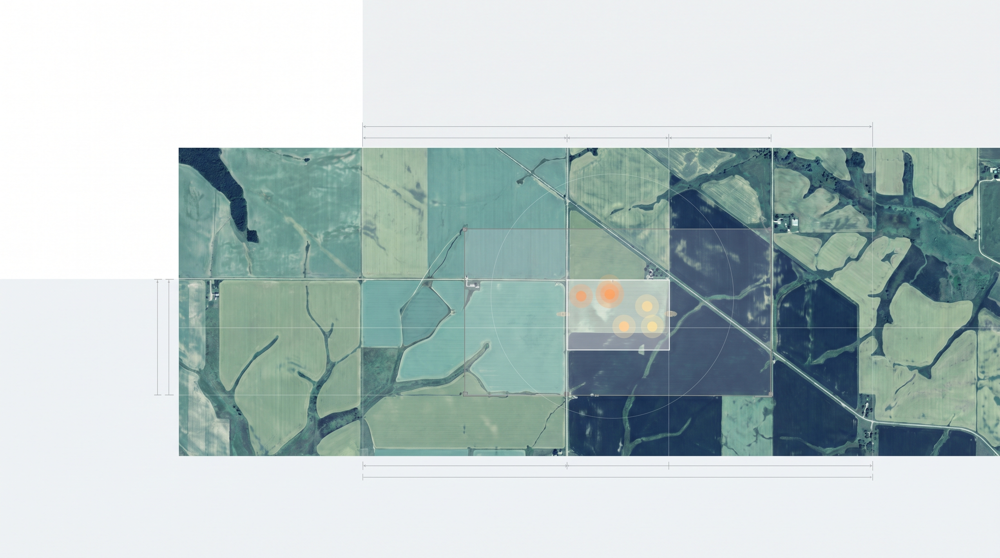
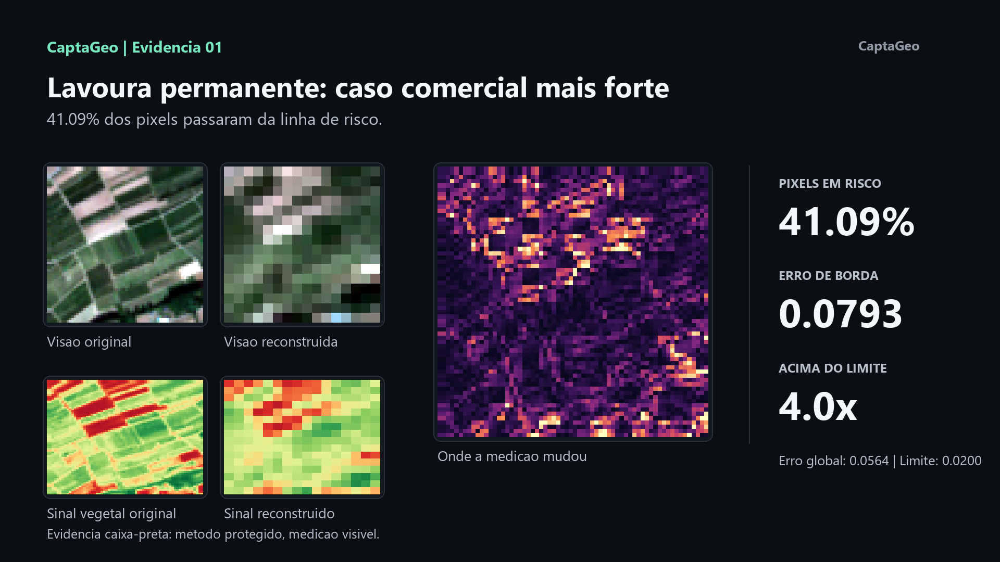

01
CaptaGeo | Protocolo v0.1
Auditoria de integridade geoespacial
Imagens processadas podem simplificar o sinal territorial. A análise CaptaGeo verifica se leituras agrícolas, ambientais e territoriais ainda preservam variação espacial, bordas e sinais espectrais relevantes.
Uma decisão agrícola, ambiental ou financeira baseada em imagem processada sem verificação pode estar usando um território simplificado demais para representar a realidade.
41,09%
pixels em atenção
0,0793
erro de borda
4,0x
acima do limite

Definição
Integridade do dado utilizado na decisão
A verificação concentra-se na relação entre fonte, sinal reconstruído e métrica final. O objetivo é registrar onde a leitura permanece consistente e onde exige revisão técnica.
A imagem pode parecer organizada.
A questão é se o sinal ainda representa o território.
A questão é se o sinal ainda representa o território.
Protocolo CaptaGeo v0.1
Fluxo técnico de auditoria
Protocolo inicial para análise de integridade em sinais derivados de imagens de satélite.
02
Reconstrução do sinal
03
Comparação espectral
04
Diagnóstico de integridade
05
Evidência técnica
Demonstração
Exemplo de auditoria NDVI
Demonstração com amostra Sentinel-2. O objetivo é mostrar como divergências de sinal aparecem em mapas, métricas e comparação visual direta.
- até 45% dos pixels fora do intervalo esperado
- aumento de erro em regiões de borda
- perda de variação em zonas de transição vegetal
- padronização do sinal em áreas contínuas

Relatório demonstrativo
Relatório demonstrativo
O relatório demonstra como uma auditoria CaptaGeo organiza área, fonte, métrica, divergência, máscara de atenção e interpretação técnica em um pacote rastreável para avaliação interna.
Área analisada
Registro do recorte territorial, janela de análise e contexto de uso.
Fonte utilizada
Identificação da origem geoespacial e das condições mínimas de leitura.
Índice reconstruído
Leitura espectral derivada para comparação técnica controlada.
Mapa de divergência
Visualização das zonas onde o sinal processado se afasta da referência.
Métricas principais
Pixels em atenção, erro de borda e relação acima do limite técnico.
Interpretação técnica
Síntese objetiva do que foi observado e do que exige revisão.
Limitações da análise
Registro do escopo, das premissas e dos limites do resultado demonstrativo.
Saída
Entregáveis técnicos
Saída orientada a equipes de risco, auditoria, crédito, seguro, ESG, agro e monitoramento territorial.
Relatório técnico em PDF
Documento consolidado com contexto, metodologia resumida, mapas e métricas.
Mapa de divergência
Visualização das áreas onde o sinal processado se afasta da referência.
Máscara de atenção
Camada objetiva para identificar pixels e zonas que exigem revisão.
Resumo executivo
Leitura curta para decisão interna, sem substituir avaliação técnica final.
Pacote de evidência
Arquivos visuais e métricos para rastreabilidade e compartilhamento.
Tratamento dos dados
Como os dados são tratados
O método preserva a rastreabilidade entre fonte, sinal derivado e evidência visual. Detalhes operacionais internos permanecem protegidos; a medição resultante fica visível.
Rastreabilidade
Registro de área, período, fonte, índice analisado e artefatos produzidos.
Comparação controlada
Leitura lado a lado entre sinal original, sinal reconstruído e mapa de erro.
Métricas verificáveis
Pixels em atenção, erro de borda e relação acima do limite técnico.
Uso responsável
Resultado apresentado como apoio técnico, não como decisão automática.
Base técnica
Base de análise
Fontes compatíveis inicialmente
Dados Sentinel-2 (ESA), recortes geoespaciais de interesse e índices espectrais padrão como NDVI.
Limitações assumidas
Resultado dependente de cobertura, período, qualidade da fonte, resolução e coerência do recorte analisado.
Uso responsável
A CaptaGeo não substitui decisão pericial, agronômica, financeira ou regulatória. A auditoria indica perda de integridade, divergência espacial e zonas que exigem revisão técnica.
Rastreabilidade
Comparação entre dado original e reconstruído com evidência reproduzível sob o Protocolo CaptaGeo v0.1.
Triagem técnica
Enviar área para triagem técnica
Encaminhamento inicial para avaliação de escopo, fonte disponível, período e tipo de análise geoespacial.